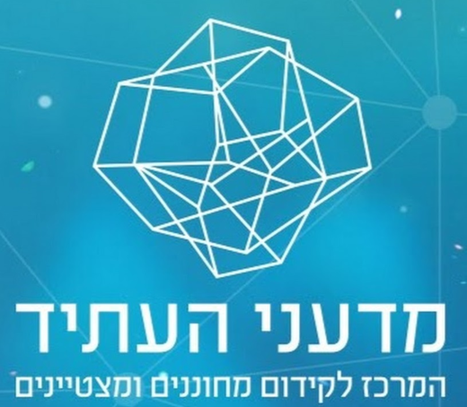
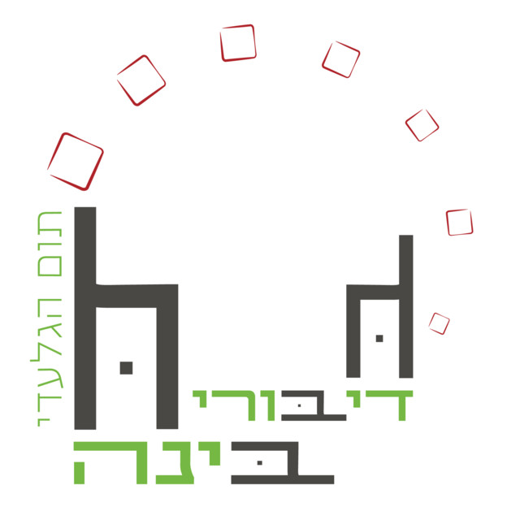
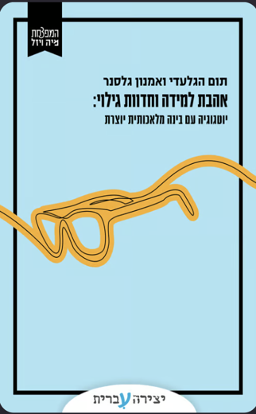
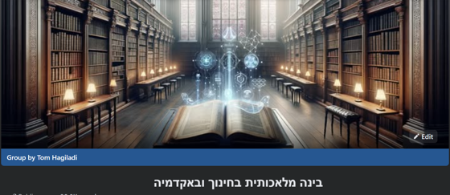
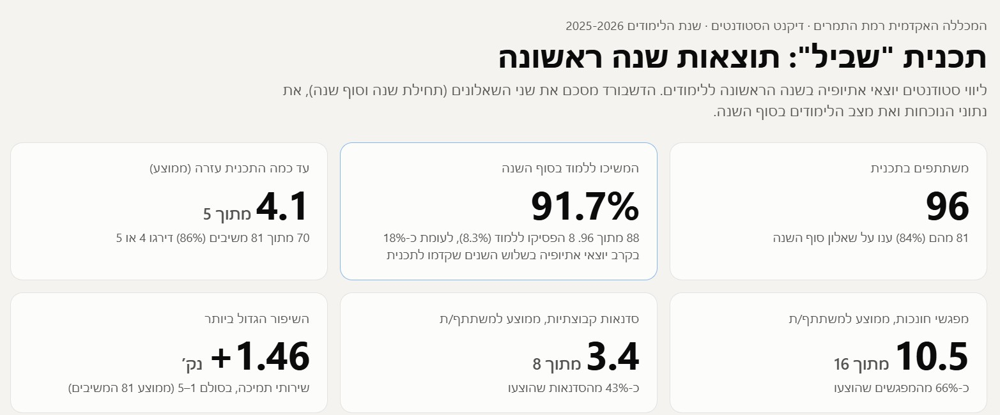
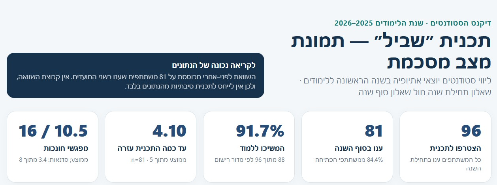
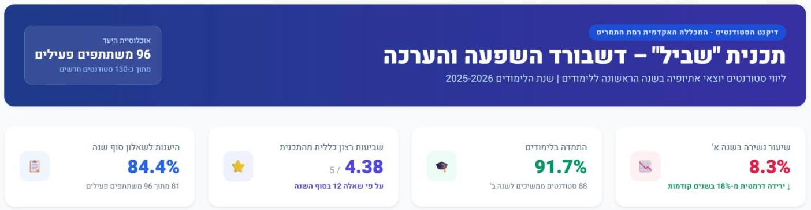

בינה מלאכותית
בעבודת דיקנט הסטודנטים
פורום דיקני הסטודנטים · נווה אילן · 11.11.2026
תום הגלעדי
מי אני, בקצרה
- עשרים שנה כאיש חינוך, חלקן בניהול מערכות חינוך: הקמה וניהול של בית ספר, סגן מנהל פסג"ה תל אביב-יפו, ואחראי הפן החברתי-רגשי במדעני העתיד.
- בשלוש השנים האחרונות: רק הממשק שבין בינה מלאכותית לארגוני למידה והוראה.
- מנחה את הפודקאסט "דיבורי בינה", מנהל את קהילת "בינה מלאכותית בחינוך ובאקדמיה", וכותב עם פרופ' אמנון גלסנר את "אהבת למידה וחדוות גילוי".




מה השתנה מאז שיצא ChatGPT
שואלים ומקבלים
צ'אט שעונה על שאלות ומנסח טקסטים.
כלים שמעבדים ומייצרים
מסכמים, מחפשים מקורות, ממפים ידע. ומייצרים תוצרים: תמונה, מצגת, סרטון קצר. עדיין לא תמיד טוב.
סוכנים שעושים
מקבלים משימה שלמה ומבצעים אותה מקצה לקצה: קוראים, מתכננים, כותבים, בודקים.
השאלה כבר לא אם להשתמש.
השאלה היא איך זה נכנס לעבודה של היחידה.
משפחות הכלים: סדר בבלגן
צ'אטים כלליים
עונים רק מהמקורות שלכם
תמלול וזיכרון של פגישות
סוכנים שעושים עבודה
לא צריך להכיר את כולם. צריך לדעת לאיזו משפחה לפנות.
שלושה דברים
מתכנון ההתערבות, דרך שאלון שנבנה בקוד, ועד ניתוח ודשבורד
מההקלטה ועד המשימות
כלל אחד
- לא מעלים פרט מזהה של סטודנט לכלי פתוח. לא שם, לא תעודת זהות, לא טלפון.
- מקודדים: מספר סידורי במקום שם.
- מנוי ארגוני שהמוסד קונה משנה את התמונה. ועדיין, בודקים מול המחשוב לפני.
איך ארגון שמוביל תכניות התערבות יודע שהתכניות שהוא מוציא לפועל עובדות?
אתם נותנים ליווי, עושים סדנאות, נותנים חונכויות. אבל איך יודעים שזה עובד?
לְמה אתם משתמשים בבינה מלאכותית?
היום נעבוד בעיקר עם 2 ועם 5: הצ'אט הוא שותף לחשיבה, לא רק מכונה לטקסטים.
תכנית ליווי לסטודנטים יוצאי אתיופיה בשנה הראשונה
על מי, במה, ובאיזו מידה. לאורך הבוקר: תכנית בדויה בשם "שביל", במכללה בדויה, המכללה האקדמית רמת התמרים. כל הנתונים מומצאים.
ארבעה שלבים, ובכל אחד הבינה נכנסת אחרת
לתכנן את ההתערבות
לתכנן את המדידה
שאלון לפני ואחרי, שנבנה אוטומטית
לנתח, להמחיש בדשבורד, ולהחליט
להציג את הממצאים
בהמשך היוםשלב 1: הבינה כשותפה לתכנון נתרגל בסדנה
משאבים
רכזת, 14 חונכים, מרכז הלמידה
פעילויות
16 מפגשי חונכות, 8 סדנאות, תגבור
תפוקות
96 משתתפים, מפגשים שהתקיימו
תוצאות
שייכות, כתובת לפנייה, התמדה
שלב 2: מה מודדים, ומתי נתרגל בסדנה
לפני התכנית
שאלון פתיחה, ומה שכבר יש: נוכחות, ציונים
בסוף התכנית
אותו שאלון בדיוק, ורישומי השתתפות
חצי שנה אחרי
התמדה לשנה ב, ומה נשאר
- תפוקות מול תוצאות: כמה הגיעו, מול האם משהו השתנה אצלם.
- קבוצה להשוואה: האם יש, ולמה זה משנה.
שלב 3: מתכננים שאלון לפני ואחרי נתרגל בסדנה
- הבינה מנסחת טיוטה, ואז בודקת את עצמה.
- אותו שאלון בדיוק בהתחלה ובסוף.
- שאלה ראשונה: קוד משתתף, לא שם.
- תוקף אמיתי דורש פיילוט, או מישהו שמבין במדידה.
יש הרבה דרכים להכין שאלון
סביבת מיקרוסופט
לפי מיקרוסופט, בטפסים שלה יש עוזר שמנסח שאלון שלם מתיאור. דורש רישיון בתשלום. אני לא עובד איתו.
Copilot · Microsoft Forms
כלים סוכניים
יודעים לבנות שאלון שאינו של גוגל ולא של מיקרוסופט: למשל דף שאלון שעומד בפני עצמו.
היום
מתכננים עם ג'מיני,
ובונים בגוגל טפסים
בעזרת קוד שג'מיני כותב.
Google Apps Script
מהתכנון לשאלון אמיתי נתרגל בסדנה
- מבקשים מג'מיני לכתוב קוד שיוצר את השאלון.
- פותחים את האתר של הקוד של גוגל, ופרויקט חדש.
- מדביקים את הקוד, שומרים, ולוחצים "הפעלה".
- בפעם הראשונה מאשרים הרשאות. מסך אזהרה? "מתקדם", ואז "מעבר לפרויקט". זה תקין לקוד שכתבתם לעצמכם.
- הקישור לשאלון ביומן ההרצה, והשאלון כבר מחכה בדרייב.
function createShvilForm() {
var form = FormApp.create('Shvil');
form.addTextItem()
.setTitle('Participant code');
form.addScaleItem()
.setBounds(1, 5);
Logger.log(form.getPublishedUrl());
}
בהנחיות לתרגול: הפרומפט, וגם קוד מוכן שבונה את שאלון שביל, למקרה שמשהו נתקע.
תרגול: מתכננים תכנית התערבות נתרגל בסדנה
בזוגות או בשלשות. תכנית אמיתית שלכם, בלי נתונים של סטודנטים.
- לפני שמתחילים: מפעילים רשמקול בטלפון, ומקליטים את השיחה של הקבוצה.
- שלבים 1 עד 3: מודל לוגי, תכנית מדידה, שאלון.
- מי שמספיק: בונה את השאלון בגוגל טפסים, עם הקוד.
בחשבון ג'מיני חינמי אפשר להעלות עד 10 דקות שמע. נשתמש בהקלטה אחרי ההפסקה.
שלב 4: מהאקסל לתשובה נתרגל בסדנה
שלושת הקבצים יחד נותנים למודל הקשר: מה התכנית רצתה להשיג.
בודקים כל מספר. המודל יודע להמציא.
מה הבינה לא עושה במקומכם
- היא לא מחליפה הערכה מקצועית כשמדובר בהחלטה גדולה.
- היא לא יודעת מה קרה בשטח. אתם יודעים.
- היא כן מקצרת שבועות של עבודה לשעות, ומאפשרת לדיקנט קטן לעבוד מבוסס נתונים.
מהנתונים לדשבורד נתרגל בסדנה
אותם קבצים, בקשה אחרת: דף אחד שמראה את הנתונים, המגמות והפערים. נפתח בדפדפן, ואפשר לשלוח או להציג.

כך זה יצא לקלוד, על הקבצים של שביל.
יפה זה לא נכון

- שביעות רצון 4.10, בדיוק כמו בקובץ.
- תיבה שאומרת שאין קבוצת השוואה.

- שביעות רצון 4.38. בקובץ: 4.10.
- הדאגה הכלכלית "ירדה". בפועל היא עלתה.
- ציטוטים שלא קיימים בקבצים.
תרגול: מהנתונים לתשובה ולדשבורד נתרגל בסדנה
הקבצים של שביל
מורידים מהנחיות התרגול
הנתונים שלכם
רק אחרי התממה
- קודם הניתוח, עם הפרומפט של שלב 4.
- ואז הדשבורד.
- בודקים שלושה מספרים באקסל.
- מי שמספיק: אותו פרומפט במודל אחר, ומשווים.
מה יצא לכם?
שתיים או שלוש קבוצות מראות דשבורד, או שאלון שבנו
15 דקות
יצירת זיכרון ארגוני בעזרת בינה מלאכותית
הידע מתאדה. כמה אנרגיה אתם מוכנים להשקיע כדי לשמור אותו?
ההבדל בין דרכי התמלול הוא באוטומציה: כמה מאמץ נדרש מאנשי הצוות כדי שכל פגישה תתועד.
רשמקול בטלפון, ומעלים לג'מיני
הכי פשוט, ובחינם. חינמי: עד 10 דקות. במנוי: עד 3 שעות. לפגישה ארוכה: המחברת של ג'מיני.
מכשיר הקלטה ייעודי, לפגישות בחדר
מקליט ומסכם לבד. צריך לזכור להפעיל אותו.
כלי שמצטרף לבד לכל פגישת זום מהיומן
מתמלל בלי שאף אחד יעשה דבר.
מערכת שמחוברת ליומן, לדרייב ולמיילים
שולפת כל פגישה ומה סוכם בה: "מה עשינו עם התכנית הזו בפברואר?"
הקלטת שיחות: מה מותר ואיך
אומרים בתחילת הפגישה
שמקליטים. כולם יודעים, כולם מסכימים.
שומרים רק בכלי שהמוסד אישר
ההקלטה היא מידע של אנשים. היא לא נשארת בכלי פרטי.
מהפגישה למשימות נתרגל בסדנה
- לוקחים את ההקלטה של הקבוצה מהתרגול שלפני ההפסקה.
- מעלים לג'מיני, או למחברת של ג'מיני. ארוכה מ-10 דקות? המחברת.
- אין הקלטה? בהנחיות לתרגול יש תמלול של ישיבת צוות בדויה.
החלטות
משימות
תרגול: ההקלטה שלכם הופכת למשימות נתרגל בסדנה
- מעלים את ההקלטה מהתרגול הקודם, או את התמלול הבדוי.
- מריצים את הפרומפט, ובודקים: האם המודל המציא משימה? האם שכח החלטה? האם ניחש תאריך?
- מי שמספיק: שואל את המודל שאלה על הפגישה. "מה החלטנו לגבי...?"
השלב החמישי: להציג את הממצאים
יש ממצאים, ואולי תרצו להציג אותם. להנהלה, לצוות, או לפורום כמו זה.
תכנון
מדידה
שאלון
ניתוח ודשבורד
להציג
מצגת שמודל שפה כותב בקוד
- הוא לא בונה שקופיות בתוכנה. הוא כותב דף אינטרנט שמתנהג כמו מצגת.
- קובץ אחד, שנפתח בכל דפדפן. עוברים בין השקופיות עם החיצים.
- לא צריך לקרוא שורת קוד. בשלושת המודלים יש כפתור הורדה.
- ודף אינטרנט יודע מה שמצגת רגילה לא יודעת. למשל, מספרים שרצים:
שני פרומפטים: קודם תכנית, אחר כך קוד
תרגול: המצגת שלכם נתרגל בסדנה
הופכים את הניתוח או את הדשבורד מבלוק 1 למצגת של 5 שקופיות, עם שני הפרומפטים.
איפה רואים אותה: בג'מיני בחלונית הצד, בקלוד בחלון שליד השיחה, ובצ'אט ג'י-פי-טי בתצוגה המקדימה. מורידים, פותחים, ומסך מלא.
רוצים להעמיק אחרי הסדנה? בהנחיות לתרגול יש קישור למסלול שלם על מצגות בקוד.
מה לוקחים מכאן
תכנית אחת שלכם, עם מודל לוגי, תכנית מדידה ושאלון לפני ואחרי.
פגישה אחת השבוע שמוקלטת, ומסתיימת בסיכום ובמשימות.
נתונים שכבר יש לכם, שהופכים לדשבורד או למצגת.
תודה
תום הגלעדי